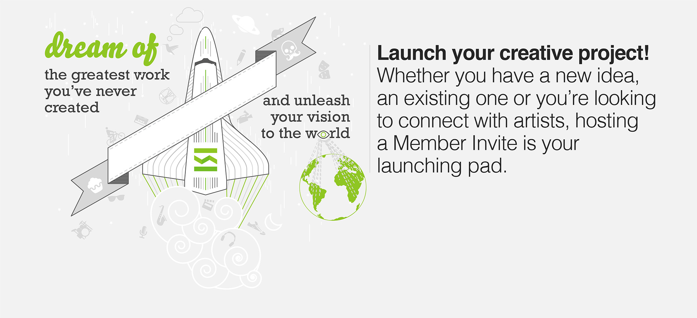

Talenthouse projects
During my journey as designer at talenthouse I had the opportunity to work across the company, from executives, to engineers, designers, and marketeers.
Talenthouse | 2011-2012 | Palo Alto, CaliforniaTalenthouse landing page signed in
Talenthouse landing page signed out
User looking at his portfolio page
Someone looking at a user's portfolio page
Someone looking at a user's portfolio page
Campaign details page with process to participate completed
Campaigns dashboard
Artwork to express the intention of each type of template campaign
Collage to represent the brand and use it for promotion across
mediums

Illustration for merchandising like t-shirts and stikers
Virtual graffiti style promo to express the brand values

Illustration for the website and other merchandising like stickers
and t-shirts
Illustration for promotional on portcards and 3rd party websites
Illustration for promotional on print and digital
Illustration of the logo with a 3d illution I did for fun